Rxph & Zenithtrox School
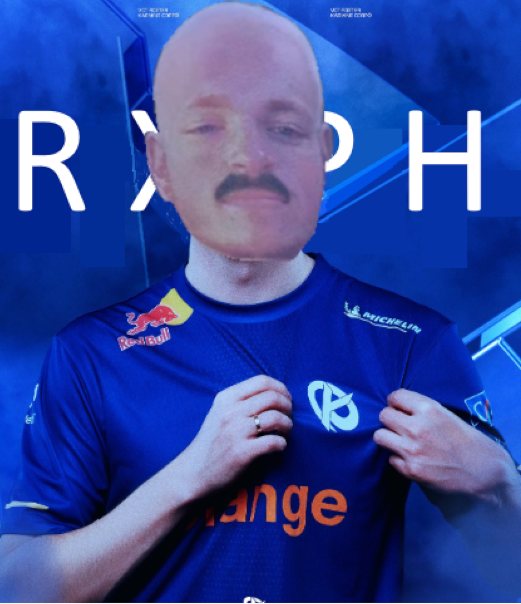
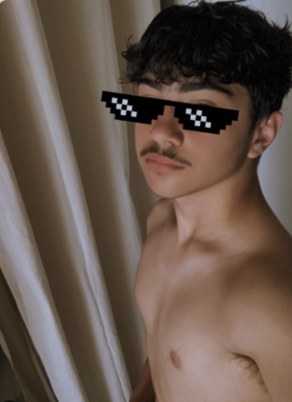

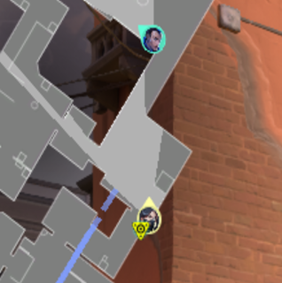
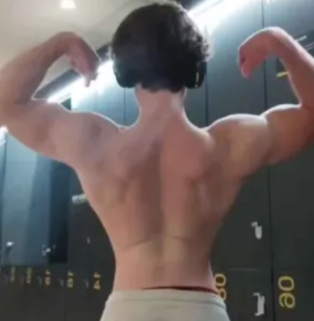

 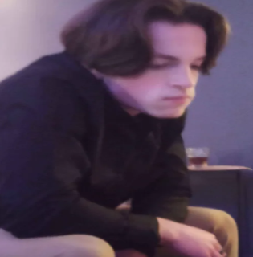
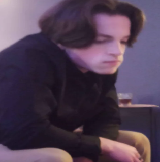
 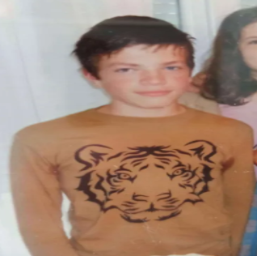
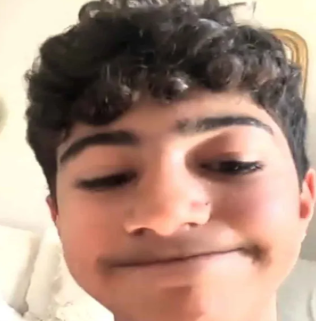
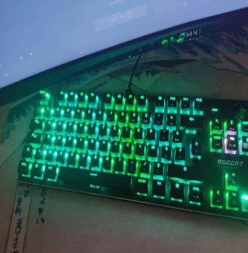
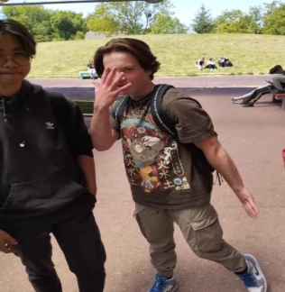
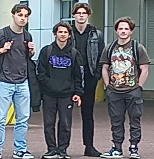
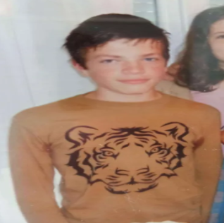
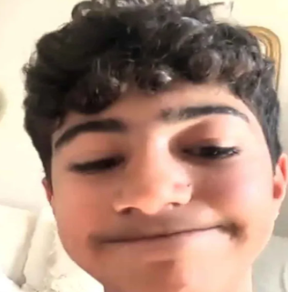
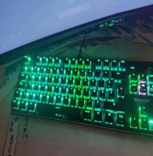
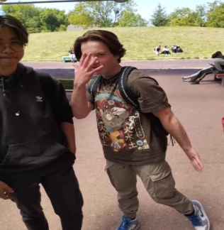
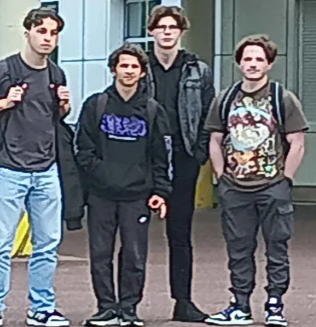
 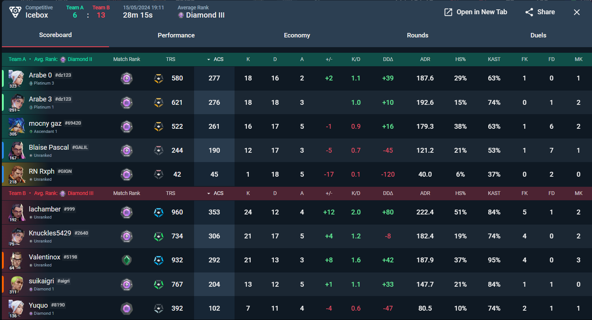
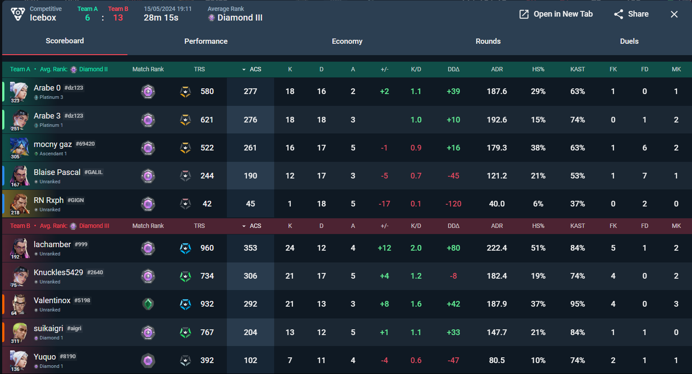
Nous vous aidons à progresser sur VALORANT, à l'aide d'un joueur très mécanique, Rxph, et notre In-Game Leader Zenithtrox. De plus, par son passé professionel chez Gentle Mates, Rxph pourra répondre à toutes vos questions sur la scène compétitive du jeu.
Vous aurez accès à :
- Une session coaching par semaine, VALORANT et IRL.
- Des vidéos réalisées par Rxph contenant des guides exclusifs vers le rank up.
- Un suivi de vos games par Rxph sur le long terme avec analyses.
- Une communication directe et 24/24 avec nos joueurs
- Des sessions agréables grâce à deux joueurs charismatiques et hors-normes.
- Des sessions d'apprentissage de l'anglais avec Zenithtrox afin de pouvoir mieux communiquer avec vos coéquipiers
Bonus (uniquement sous la tutelle de Rxph) :
- Développement personnel.
- Gestion de la santé mentale et musculation.
- Apprentissage de la discipline
Rxph & Zenithtrox School
skool.com/Rxph&Zenithtrox
Nous vous aidons à progresser sur VALORANT
| 54 |
7 |
1 |
| Membres |
Online |
Admin |
Nous rejoindre
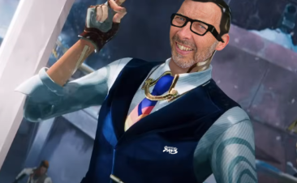
Mille Gérald Perdir
Chef d’établissement HDF traileur/marathonien
Administrateur
Contact
Nous vous aiderons donc à vous améliorer à la fois personnellement, comme mentalement ou même mécaniquement avec des scéances traning serieuses et poussées, semblables à celles des VCT que suivent M8 Natanks ou KC Aspas.
Je me suis fait coacher par Rxph et Zenithtrox, et je suis ravi. Rxph, avec son expertise mécanique et son expérience compétitive, m’a offert des conseils précieux, tandis que Zenithtrox, grâce à sa vision stratégique et son approche humaine, m’a aidé à mieux communiquer et à gérer mes émotions. Leur pédagogie et leurs analyses m’ont permis de progresser à la fois en jeu et mentalement. Je les recommande à tous ceux qui veulent s’améliorer sur VALORANT et devenir une meilleure version d’eux-mêmes.
JoKo - Radiant
Je me suis fait coacher par Rxph et Zenithtrox, et je suis ravi. Rxph, avec son expertise mécanique et son expérience compétitive, m’a offert des conseils précieux, tandis que Zenithtrox, grâce à sa vision stratégique et son approche humaine, m’a aidé à mieux communiquer et à gérer mes émotions. Leur pédagogie et leurs analyses m’ont permis de progresser à la fois en jeu et mentalement. Je les recommande à tous ceux qui veulent s’améliorer sur VALORANT et devenir une meilleure version d’eux-mêmes.
Uub - Ascendant 3
Pour résumer le coaching, je le recommande à 100% des joueurs, mais seulement si vous êtes prêts à vous investir et à vraiment progresser. Après avoir passé plusieurs heures en coaching avec Rxph et Zenithtrox, je peux vous dire que le temps passe vite, et chaque minute est ultra bénéfique. Ils savent identifier aussi bien nos erreurs que nos points forts, et leur pédagogie est top. Rxph et Zenithtrox sont à l’écoute, prennent le temps de bien expliquer et savent s’adapter à chaque joueur. Dès la première session, on sent clairement la différence dans notre gameplay.
Pastèque - Platine 2
J'ai fait deux coachings avec Rxph et Zenithtrox, après les avoir découverts sur les réseaux sociaux. Ce qui m’a poussé à franchir le pas, c'est leur expérience et les coachings gratuits qu’ils proposaient. La manière dont ils analysaient les parties et m’aidaient à comprendre mes erreurs m’a convaincu.
Le premier coaching était une analyse VOD où ils m'ont donné des conseils sur mon placement, aussi bien en attaque qu'en défense, et m’ont aidé à mieux utiliser mon stuff.
Le second coaching était centré sur les gunfights : comment mieux prendre les duels, gérer les décales et optimiser l’utilisation du stuff.
Les sessions étaient très agréables et Rxph et Zenithtrox étaient vraiment à l’écoute. Ils prenaient le temps nécessaire, même si on dépassait l'heure prévue. Ils sont honnêtes, disponibles pour un suivi continu, et n’hésitent pas à répondre à toutes mes questions, même pour mes clips les plus fous !
Phantom - Platine 3